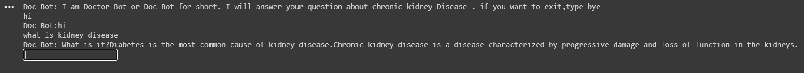

Project Chatbot & Domain Specific and OpenDomain
Project Description: Developed a domain-specific medical chatbot in Python

About the project:
- The chatbot extracts and processes informationfrom medical articles.
- Ensuring case consistency, noise removal, andtokenization.
- Tailored to answer user queries based on articles fromwebsites like "wonderfulengineering.com."
- Demonstrates expertise in NLPand domain-specific chatbot development.
Here is the project GitHUb link: